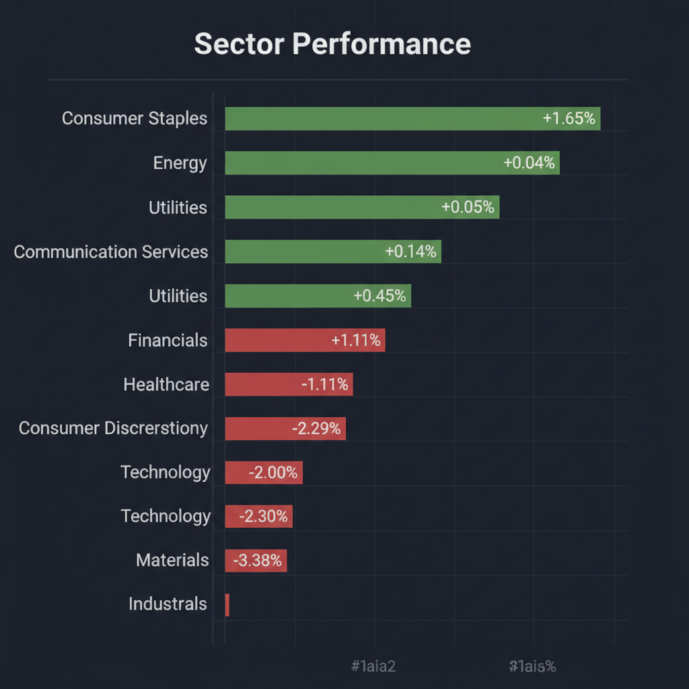
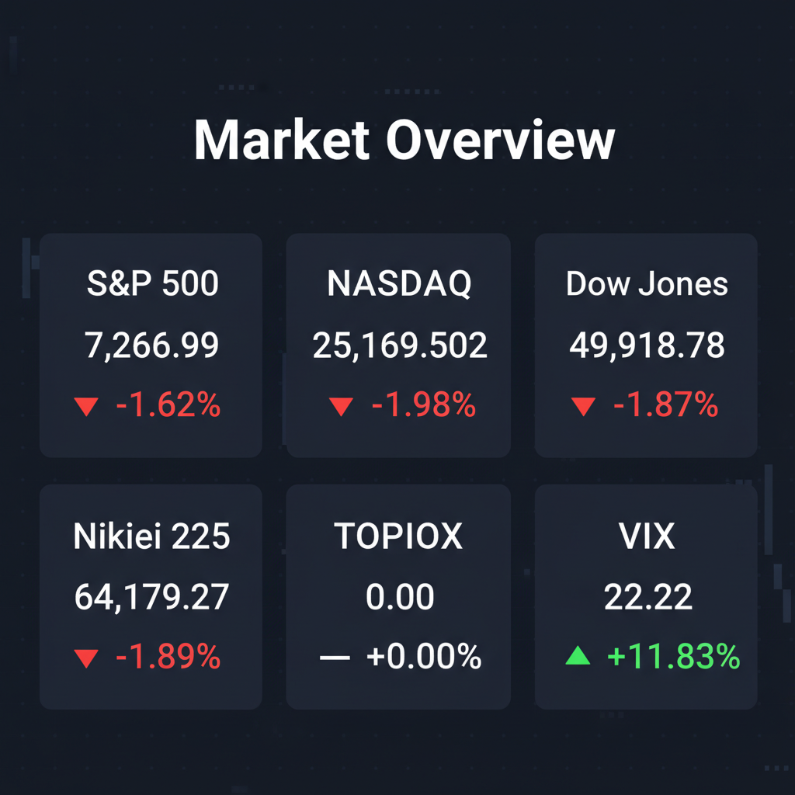

各エージェントがWeb調査結果を踏まえて独立に10段階評価した結果です。平均7以上=強気、4〜6.9=中立、4未満=弱気。
| 銘柄 | ファンダメンタルズアナリスト | テンバガーハンター | マクロエコノミスト | テクニカルストラテジスト | リスクマネージャー | 平均 | 判定 |
| VRXA | 1 資金調達必須、収益ゼロ、バイオリスク | 1 収益ゼロ、IPO直後、高リスク、非推奨 | 1 新規上場、収益ゼロ、開発リスク高 | 1 財務リスク極大、IPO直後で極めて不安定 | 1 収益ゼロ、IPO直後、財務リスク高 |
1 | 弱気 |
| BURU | 1 売上ゼロ、大幅赤字、事業継続性懸念 | 1 売上ゼロ、大幅赤字、株価崩壊、非推奨 | 1 財務破綻リスク、売上ゼロ、株価下落 | 1 財務破綻懸念、株価低迷で回復見込みなし | 1 売上ゼロ、赤字継続、破綻リスク高 |
1 | 弱気 |
エージェントが推奨した中小型株について、Google検索で最新情報を調査した結果です。
VRXA（VERAXA Biotech AG）に関する最新情報は以下の通りです。
1. 企業概要 VERAXA Biotech AGは、次世代のがん治療法を開発するバイオ医薬品企業です。特に、新規二重特異性T細胞エンゲージャー（TCE）および抗体薬物複合体（ADC）に焦点を当て、独自のBiTACプラットフォームを活用しています。現在、製品収益はまだなく、前臨床段階のがん治療パイプラインを持っています。 時価総額については、2026年6月10日時点では情報が提供されていません。同社は2026年6月11日にNASDAQに上場する予定です。
2. 直近の業績・決算情報 VERAXA Biotech AGは、現時点では製品収益がありません。資金調達の必要性が高い状況です。最新の決算情報や収益、利益、成長率に関する具体的な数値は、上場前のため提供されていません。
3. 最新ニュース・材料 2026年6月10日、VERAXA Biotech AGは、Voyager Acquisition Corp.との企業結合取引が完了し、2026年6月11日にNASDAQ Capital Marketで「VRXA」（普通株式）および「VRXAW」（ワラント）のティッカーシンボルで取引を開始すると発表しました。この企業結合により、同社は2,750万ドルの優先担保付社債による資金調達と5,000万ドルの株式購入契約により財政基盤を強化しました。また、同社は最近開催された米国がん学会（AACR）2026年年次総会で、新規BiTACプラットフォーム技術の基礎となる有望なデータを発表しています。
4. アナリスト評価・目標株価 現時点では、VERAXA Biotech AGに関する特定のアナリスト評価や目標株価は確認できません。同社は新規上場を控えているため、今後情報が利用可能になる可能性があります。
5. リスク要因 主要なリスク要因としては、現時点での製品収益がないことと、多額の資金調達が必要であることが挙げられます。前臨床段階のがん治療パイプラインに注力しているため、臨床試験の失敗、規制当局の承認が得られない可能性、競合他社との激しい競争など、バイオ医薬品開発に固有のリスクに直面しています。
6. 株価の最近の動き VERAXA Biotech AGは、2026年6月11日にNASDAQで取引を開始する予定であるため、現在のところ独立した企業としての株価の動きやトレンドデータはありません。合併前のVoyager Acquisition Corp. (VACH)の株価は、2026年6月10日に14,630米ドルで-15.43%の下落を示しています。
BURU銘柄について、投資判断に必要な最新情報を以下の通りまとめます。なお、「BURU」というティッカーは複数の企業で使用されている可能性がありますが、今回の調査では電子テクノロジーおよび電子部品セクターに属するNuburu, Inc. (AMEX: BURU) に焦点を当てて情報収集を行いました。
* 事業内容: Nuburu, Inc.は、溶接や3Dプリンティング向けの高出力・高輝度青色レーザー技術の開発・提供を行う企業です。また、デュアルユースの防衛・セキュリティプラットフォームプロバイダーへの戦略的変革を進めており、独自の指向性エネルギー技術、非運動エネルギー防衛能力、ミッションクリティカルソフトウェア、産業提携にも取り組んでいます。 * 時価総額: 2026年6月9日時点の時価総額は約2,640.55万ドルです。 * 業界でのポジション: 電子テクノロジーおよび電子部品業界に属しています。 従業員数は9名または7名と報告されています。
最新の通期情報によると、売上高は0.00ドル、純利益は-7,907万ドルと報告されています。 直近12ヶ月間の基本EPSは-9.4093ドルまたは-1.060ドルです。
過去の四半期報告では、売上高40.7万ドル、営業赤字790万ドル、EPSマイナス0.01ドルの時期もありましたが、通期では売上が計上されていない状況です。 全体として、現在のところ売上高が非常に低く、大幅な赤字を計上しており、成長は確認できません。
直近1～2週間において、Nuburu, Inc. (BURU)に特化した重要なニュースや好材料・悪材料は見当たりませんでした。米国市場全体のAI関連や他企業のニュースが多数報じられています。
みんかぶによるNuburu (BURU)の目標株価は「0.32ドル」で、「買い」と評価されています（2026年5月26日時点）。 ただし、株探ではアナリスト評価のデータがないとの記述もあります。 TradingViewのサマリーでは「中立」とされています。
* 財務上の懸念: 売上高が極めて低い一方で多額の赤字を計上しており、財務状況は非常に厳しい状態です。 これは事業継続性に大きな懸念をもたらします。 * 株価の希薄化: 新株発行や新株予約権、MSワラントを機動的に活用する方針であり、発行済株式数の増加が進む可能性があります。これは1株当たり指標や株価形成に影響を与える可能性があります。 * 競争: 高出力レーザー市場における競合企業の存在が考えられますが、Nuburu, Inc.固有の競争環境に関する詳細な情報は現時点では不足しています。 * 規制: 特定の規制リスクに関する情報は見当たりませんでしたが、防衛・セキュリティ分野への事業展開を掲げていることから、将来的に関連する規制の影響を受ける可能性があります。
Nuburu (BURU)の株価は長期的に大幅な下落トレンドにあります。 * 直近1日間: 1.50%上昇 * 直近5日間: -5.80%下落 * 直近1ヶ月間: -34.06%下落 * 直近6ヶ月間: -85.24%下落 * 年初来: -80.30%下落 * 直近1年間: -91.86%下落 * 直近5年間: -99.99%下落
2026年6月4日には上場来安値である0.1522ドルを記録しました。 2026年6月5日の終値は0.1600ドル、2026年6月9日の終値は0.1475ドル、そして現在価格は0.1437ドル（24時間で1.50%上昇）です。 移動平均線を見ると、目先5日線、短期25日線、中期75日線、長期200日線全てが下降トレンドを示しています。